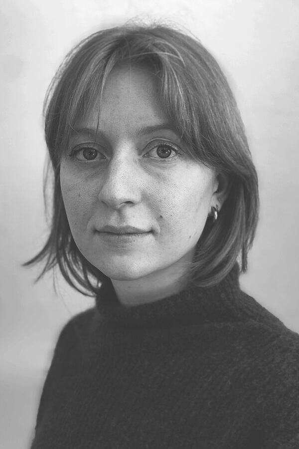

Marleen Doré
Schrijver
Marleen Doré schrijft proza en essays, en vertaalt literaire teksten vanuit het Engels. Ze studeerde kunstgeschiedenis aan Universiteit Utrecht en volgde de opleiding Creative Writing. Marleen woont en werkt in Utrecht.

Publicaties en voordrachten
Papieren Helden, Kan je lezen wat hier staat?, 2023
href="https://hardhoofd.com/de-roman-als-tapijt-van-verweven-geschiedenissen-hoe-een-collectieve-schrijversblik-houvast-biedt/">Hard//hoofd, De roman als tapijt van verweven geschiedenissen, 2023
Museum Hilversum, Nederlandse vertaling prozatekst Lucy Caldwell, 2023
Dichters in de Prinsentuin, voordracht, 2023
1000 Dichters, voordracht, 2023
PoëzieCentrum, Woorden zijn de ogen van de gedachten, 2023
Literair Tijdschrift Landauer, De muis, 2022
Seizoenszine, Hoektand, 2021
href="https://hardhoofd.com/de-roman-als-tapijt-van-verweven-geschiedenissen-hoe-een-collectieve-schrijversblik-houvast-biedt/">Hard//hoofd, De roman als tapijt van verweven geschiedenissen, 2023
Museum Hilversum, Nederlandse vertaling prozatekst Lucy Caldwell, 2023
Dichters in de Prinsentuin, voordracht, 2023
1000 Dichters, voordracht, 2023
PoëzieCentrum, Woorden zijn de ogen van de gedachten, 2023
Literair Tijdschrift Landauer, De muis, 2022
Seizoenszine, Hoektand, 2021
Contact
| marleendore@outlook.com | |
| Telefoon | +31 6 57658363 |
Teksten
Wilde Paarden
Novelle, afstudeerwerk, 2024

'Ik kan niet geloven hoe lelijk ik het woord nog vind. Hoe langer ik naar de drie letters kijk, hoe misselijker ik ervan word. Hoe heeft iemand ooit dit woord kunnen bedenken? Ben je er nog? Luister je nog? Ben je nog wakker? Of slaap je al?’
'Wilde Paarden' is een verhaal over de zoektocht naar een thuis, over mensen die weggaan en mensen die blijven, over seks, de kleur blauw en over paarden.
'Wilde Paarden' is een verhaal over de zoektocht naar een thuis, over mensen die weggaan en mensen die blijven, over seks, de kleur blauw en over paarden.
Het wegduwen van water
Kortverhaal, 2023

'Ik wist dat het niet goed meer ging toen ik mijn neus in Cees' nek duwde en niets rook. Geen mossige, zoete zweetlucht, nee, het rook gewoon naar nek. Ik voelde al een tijdje weinig. Ik voelde niets meer als ik naar de stem van Laura Marling luisterde, of als ik een reep pure chocolade in één keer opat. Die nietsheid had tot gevolg dat ik ontzettend onrustig werd. Cees gaf me eerst nog het advies te gaan lopen, wandelen, zonder doel. 'Zodat de onrust uit je benen kan,' zei hij. Ik probeerde het. Eerst leek het nog wel te helpen. Tot ik op een avond begon te lopen en niet meer wist te stoppen. De hele nacht bleef ik rondes lopen, als een nerveuze kat die geen goede plek kan vinden om neer te strijken, ontelbaar veel blokjes rond Cees' huis. Ik nam mijn telefoon niet op toen hij belde - ik was bang dat hij zou zeggen: "Je bent gek geworden."'
'Het wegduwen van water' is een kort verhaal over hitte, liefde, opdrogende lichamen aan een meer en het indringende verlangen om door iemand te worden vastgehouden. Vormgeving door Figure10, illustratie door Annemijn Gruisen.
'Het wegduwen van water' is een kort verhaal over hitte, liefde, opdrogende lichamen aan een meer en het indringende verlangen om door iemand te worden vastgehouden. Vormgeving door Figure10, illustratie door Annemijn Gruisen.